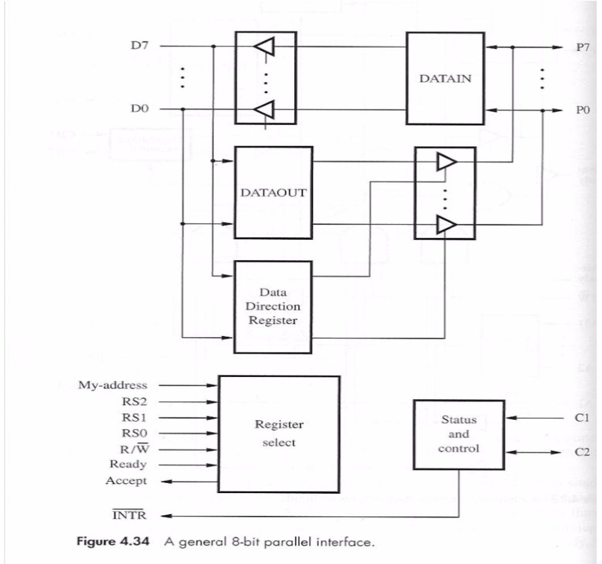
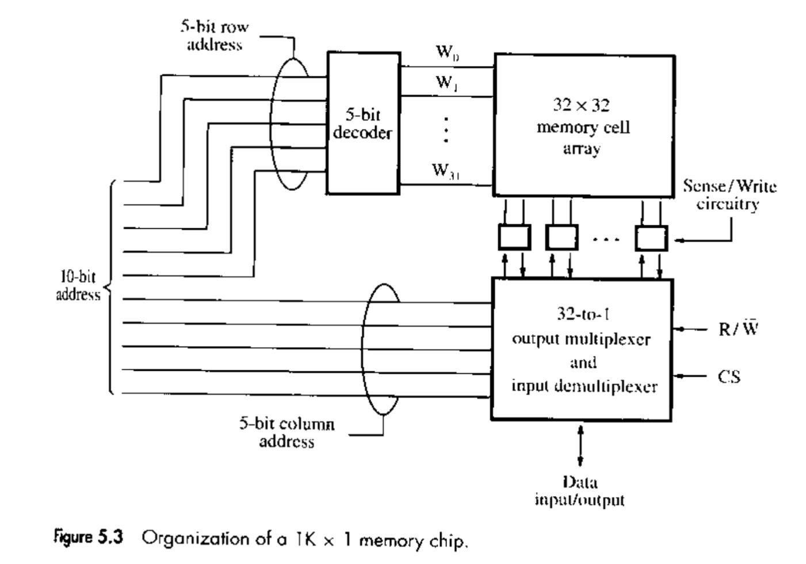
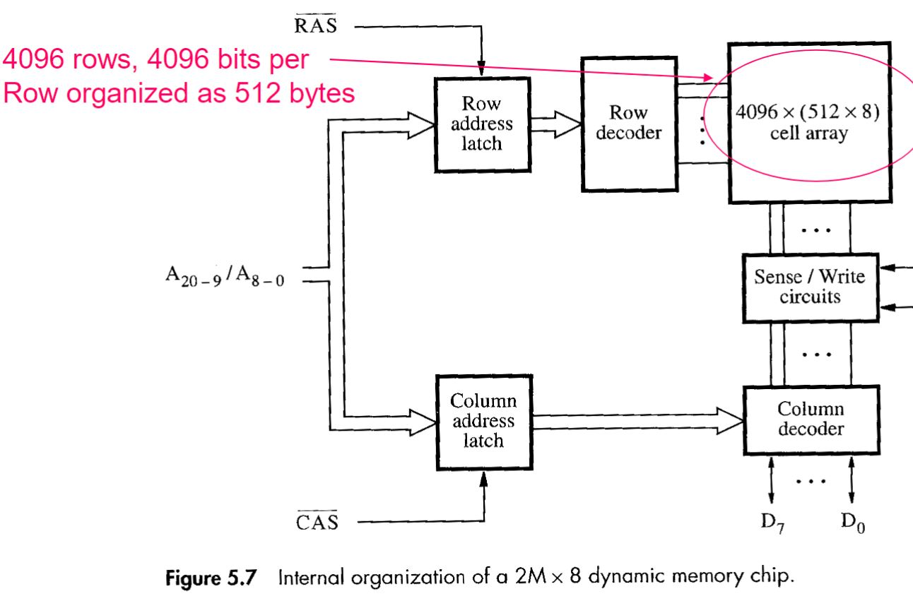
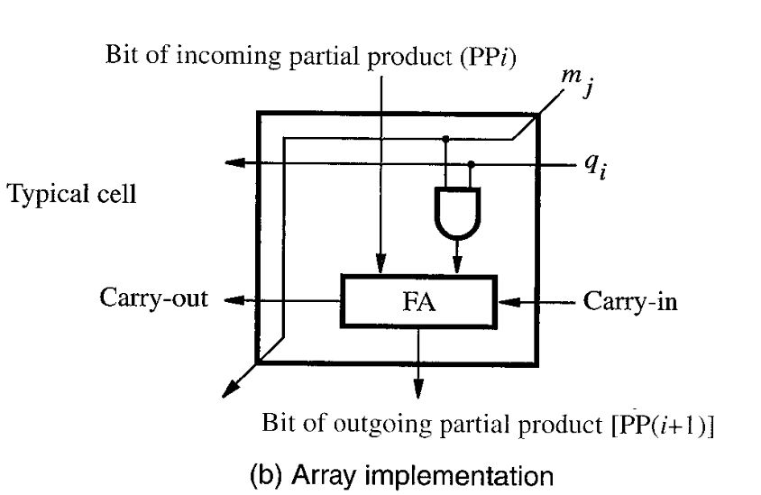
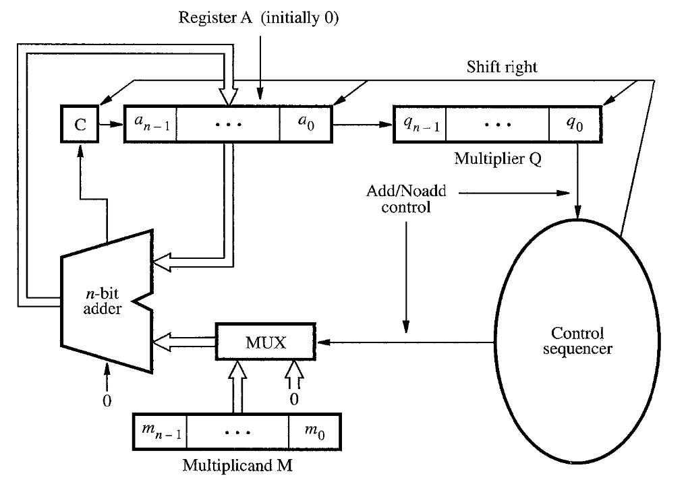
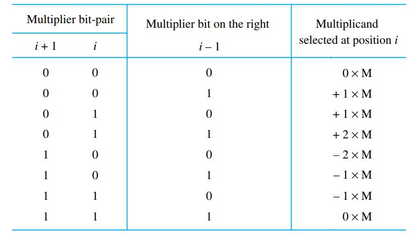
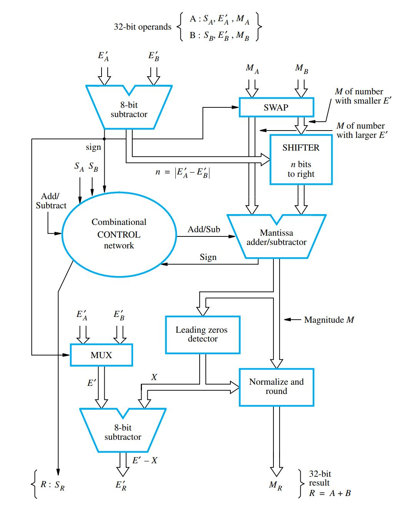
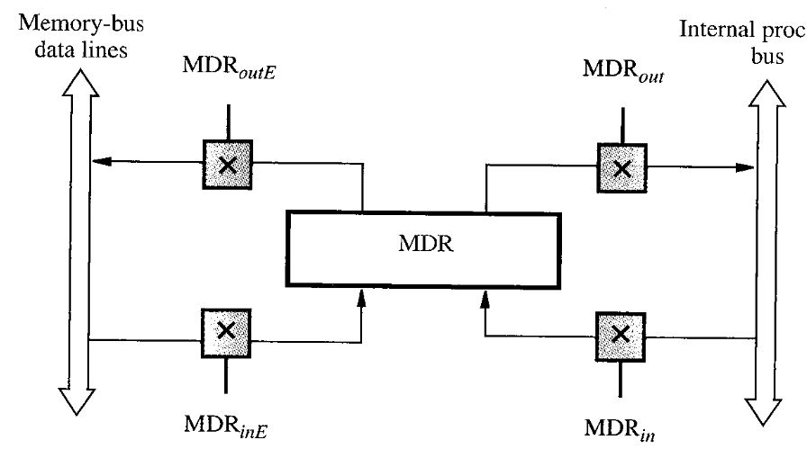

\(V=b_n\times2^n+b_{n-1}\times2^{n-1}+…+b_0\times2^0\)
\(V= \begin{cases} b_{n-1}\times2^{n-1}+…+b_0\times2^0 & if\ b_n=0\\ b_{n-1}\times2^{n-1}+…+b_0\times2^0 - 2^{n-1}+1 & if\ b_n=1 \end{cases} \)
\(V= \begin{cases} b_{n-1}\times2^{n-1}+…+b_0\times2^0 & if\ b_n=0\\ b_{n-1}\times2^{n-1}+…+b_0\times2^0-2^{n-1} & if\ b_n=1 \end{cases} \)
-
Generation 0
Mechanical computers, Analytical Engine, first digital machine by Ada Lovelace, Charles Babbage. -
Generation 1: Vacuum tubes
-
Generation 2: Transistors
-
Generation 3: Integrated circuits
-
Generation 4: Very Large Scale Integration
- Generation 5: VLSI,Gallium Arsenide, Optical Techs
- Input/Output
- CPU
- Memory
Single Bus: All components are connected by a single set of wires
Multiple Bus: Components are not all connected together. There are multiple sets of wires
There are fixed sized words of data that can be referenced to by their memory address.
Big-Endian: the lower bytes addresses are used as MSBs
Little-Endian: the lower bytes addresses are used as LSBs
Load (Read,Fetch) get data from a memory location(address)
Store (Write) transfer data from the CPU to a memory location
RISC (Reduced Instruction Set Computer): small set of instructions(each are a word) with few addressing options, but fast and efficient and easier to design.
CISC (Complex Instruction Set Computer): lots of instructions (some more than a word), many addressing options, smaller programs.
Harvard Architecture: The ALU, the memory, and the I/O components are connected to the control unit by multiple buses. Also, there are separate memories for instructions and data.
Von Neumann Architecture: the control unit and the ALU are regrouped inside the CPU, the memory unit is connected to the CPU by a bus, the input and output components are connected to both the CPU and the memory unit. Both instructions and data are stored in the same memory unit.
Program code comes first in memory.
General-purpose registers: There are n general purpose registers for fast program execution
Program Counter: Contains the memory address of the next instruction to be fetched. It is incremented before every execution.
Stack Pointer: Contains the memory location of the Top of the Stack.
Return address: Contains the memory location of where a subroutine has to return
Instruction Counter: Contains the data of the next instruction to be executed.
Memory Address Register (MAR): Holds the memory address that needs to be accessed (either for reading or writing)
Memory Data Register (MDR): Holds the data that has been read from memory or that needs to be written in memory
Current Program Status Register (CPSR): Contains the arithmetic flags, Interrupt disable bits, Processor mode bits
N (negative): Set if the MSB is 1, reset otherwise
Z (zero): Set if the result is 0, reset otherwise
V (overflow): Set if the result of signed arithmetic can't be represented in a word
C (carry): Set if the result of unsigned arithmetic can't be represented in a word
Immediate: literal value. [Ins #Value] Effective Address = Value
Register: general purpose register. [Ins R] EA = R
Absolute: memory location. [Ins LOC] EA = LOC
Indirect: Using the data from a register or a memory location to find another memory location. [Ins (LOC) or (R)] EA = (LOC) or (R)
Index: indexed register. [Ins i(R)] EA = (R) + i
Base with Index: multiple registers. [Ins (R1,R2)] EA = (R1) + (R2)
Base with Index and offset: multiple registers indexed. [Ins i(R1,R2)] EA = (R1) + (R2) + i
Relative: Get data from a previous line in the program. [Ins X(PC)] EA = (PC) + X
AutoIncrement: Increments register after used. [Ins (R)+] EA = (R), R += inc
AutoDecrement: Decrements register after used. [Ins -(R)] R -= inc, EA = (R)
word: 32bits, byte: 8bits, halfword: 16bits
13 (R0-R12) and Stack Pointer (R13 or SP), Return Address (R14), and Program Counter (R15 or PC)
User: the main program is executed
Fast Interrupt Mode (FIQ): ... CHANGE ME
Normal Interrupt (IRQ): ... CHANGE ME
Supervisor: ... CHANGE ME
Abort: Handles memory access violations
Undefined: Handles undefined instructions
Preindexed writeback: Ins ... [R,#Val]! EA = (R) + Val, (R) = (R) + 4
Postindexed writeback: Ins ... [R],#Val EA = (R), (R) = (R) + 4
Immediate: halfword or 12bits
Indexing: 12 bits
LSL: Shift bits left Ins ... [R1,-R2, LSL #Val] \((R0) = ((R1) - (2^{Val}\times (R2))), (R1) = ((R1)-(2^{Val}}\times(R2)))\)
24 bits 2's complement signed
No. You need to use special instructions. e.g ADDS
LDR R1, N
LDR R2, =NUMB1
MOV R0, #0
Loop
LDR R3, [R2],#4
ADD R0, R0, R3
SUBS R1, R1, #1
BGT Loop
STR R0, SUM
You decrement SP by 4 (bytes) and write data at SP.
STR R0, [R13,#-4]!
LISTADD
STMFD R13!,{R3,R14}
MOV R0,#0
LOOP
LDR R3,[R2],#4
ADD R0,R0,R3
SUBS R1,R1,#1
BGT LOOP
LDMFD R13!,{R3,R15}
// R0 is the sum returned
AREA: specifies the start of instructions and data
ENTRY: specifies the point where the program execution starts
DCD: Stores a value at memory location. e.g SUM DCD 0
EQU: Macro
Select device
Transfer data
Timing/Sync
Parallel: Multiple bits transferred simultaneously, high speed, $$$, problems with long distance
Serial: Single wire to send data one bit at a time, slower speed, $, synchronous or asynchronous
Data is sent along with a clock signal so receiver know when data is valid. Higher speed but requires additional lines
No clock signal is sent. Sender and receiver must agree on baud rate (bps). Special signaling is required to synchronize sender/receiver.
Simplex: One way direction
Half Duplex: one way OR the other at a time
Full Duplex: bidirectional connection
Special Instruction: Useful with 2 bus architecture where all devices are connected to the CPU
Memory Locations: Useful with 1 bus architectures when your devices are connected to memory
ADDR Decoder: Connected to the ADDR bus like memory.
Control: Get Instruction e.g Read, write
Data Register: Contains the data about to be read/written
Status Register: Contains the interrupt disable bits, status bits (ready or not)
A procedure checks device's status then moves data (in or out). Slow because the CPU is tied up. Faster devices will cause problems.
Unit that takes control of the memory bus, store data from I/O device directly in memory and wait for next byte/word to arrive. Connected to the memory bus and to an I/O Controller. The CPU provides the start address in memory, the word count, the function (Read/Write) and the address of I/O Device (if required).
Data Count Register: Contains the number of DMA data transfers to be performed. e.g amount of words
Data Register: Contains the data about to be read/written
Address Register (ADDR): Address of the unit on the memory bus
Detached: Single memory bus with all devices and DMAC connected
Integrated: I/O Devices are connected directly to the DMAC, DMAC connected to single memory bus
I/O Bus: DMAC connected to memory bus and I/O Bus, All I/O devices connected to I/O bus
PCI/O : $ Simple Slow CPU tied up
DMA: $$$ Requires facilities for Address generators, control signals, data bus system. Large for large amount of data stored into continuous memory locations. Required Bus arbitration (Who controls the memory bus).
Exception thrown when an I/O device receives data. Interrupts the user to run the Interrupt Service Routine and then gives back control to the user. Needs IRQ line(s).
Single IRQ Line: CPU pools status bit of each device, priority assigned by order, Slow, all device connected to a single line, no multiple requests.
Multiple IRQ Lines: Has several different IRQ lines (for each priority). Priority assigned to various lines. Service higher priority requests first.
Devices indicate to CPU where to find ISR start address. Requires an INTR vector between CPU and device.
The ACK signal is connected to one device, which transmits it to another and so on until interrupt device found. Then return through next devices to CPU (if Vectored, return is ISR address).
CPU: Enabling of interrupts(ACK), Priority structure, Masking of interrupts
Device: Enable IRQ bit in control register
There are two interrupt lines (I and F) which can be disabled in the CPSR.
User mode is not priviledged and cannot manipulate these bits
System mode and the five exception modes are privileged
1: Powerup/reset-> enters supervisor mode 2: Data access violation (abort) 3: Fast Interrupt (FIQ) 4: Ordinary interrupt (IRQ) 5: Instruction access violation (abort) 6: Unimplemented Instruction (undefined) 7: ... ?: Software interrupt-> enters supervisor mode
Few devices that require urgent service. General purpose registers(R8-R12, R13, R14) are replaced with banked registers after the ISR.
Used for "normal" interrupts. Only R13/14 are replaced with banked registers after ISR executed. Must push/pop registers to change them.
Purpose: Not push/pop on memory (because it's slow) Register banking is having multiple registers linked to the same memory address. When an exception occur, a switch is made to one of 5 exception modes (IRQ, FIQ, Undefined, Abort, supervisor) with some registers replaced with banked registers.
It contains three classes of lines:
Data: Data transferred
Address: Memory target
Control: Read/Write etc.
At any time, there is only one device that controls the bus: Bus Master
Bus Arbitration is required if there are multiple devices that can be Bus Master
Two main methods:
Centralized Arbitration
Distributed Arbitration
CPU supervises control of bus. E.g multiple DMAC in daisy chain
One or more devices activate the Start Arbitration signal and each device bids for control of the bus by placing the bits of its ID on an arbitration bus. All competing devices look for their address on the bus. The highest address wins control and that device will drop out of competition until all devices have had a chance to control the bus.
Common clock line for all devices that is long enough to accomodate slowest device. Memory clock is much slower than CPU clock (1 memCyc = 4-5 cpuCyc). Need to add signals to allow device to tell master when it is ready.
Faster, master and slave use a handshake to do transfers. Need Master-ready and Slave-ready signals.
Inputs to registers can always listen to the bus. Only clocked when addressed.
Output from register are only transferred to the bus when required(tri-state drivers)
Each device will require address decoding and control signal generation.

One of the first standard interface independent of processor.
Device attached to PCI bus "appear" as if they are connected directly to the processor bus
"Plug-and-play"
Signaling is a master/slave relationship
Memory
I/O
Configuration: Each device has a configuration Read-Only Memory (ROM) that holds info about the device.
A 4bit command accompanies a data transfer to indicate which space is to be used.
Initiator: Bus Master(processor or DMA controller)
Target: addressed device
Transaction: data transferred
Reduced processor with pins
Address space not part of CPU address space.
Up to 8 or 16 devices connected to it
Acts as a DMAC
Can be either an initiator(for device) or a target(for CPU)
There are no address lines. Data lines are used to identify devices
Control of bus is decided by distributed arbitration
BSY signal (busy)
Collaborative standard
Supports two speeds: 1.5Mbps and 12Mbps
Speeds augmented through standards (e.g. Thunderbolt = 40Gbps)
Serial bus
USB uses a tree structure. Each hubs are connected to other hubs and I/O devices. This makes it faster to find a device. A hub copies a message from its upstream connection to all of its downstream connections
Inexpensive hubs since no real arbitration is required
When a device is connected to the system. it assumes address 0
When a device is detected, a handshake process takes place to determin the characteristics of the device
Two types of packets exchanged: control and data
Control packets: address, ack, errors, etc
Packets have PID that identifies its type (4bits transmitted twice)
Each hub checks for errors before forwarding
Data transfers at fixed interval. USB creates 1ms frames initiated with Start Of Frame(SOF) packet.
1 bit = 1 cell. A memory address returns a selected group of cells.
Primary / Secondary
Random Access (RAM) / Sequential Access (SAM)
Bipolar / CMOS / Magnetic / Optical Technologies
Static rentention / Dynamic rentention
R/WM / ROM / EPROM / EEPROM / FLASH / SSD

Old standard. Timed serial acoustic delay line
Lonng rotating cylinders with magnetic coating. Multiple R/W heads
Memory cells were ferro-magnetic disks. Wires wrapped around. Disk "remember" the direction of polarization when current in wires are activated.
Memory cells are capacitors that are either charged or not. Charges slowly leaks (Dynamic)
Memory cells are flipflop transistors. Use Very Large Scale Integration (VLSI) technology for optimization. cells placed in 2-D array
\(log_2(1024)=10\)bit of address. 5 first bits are row, 5 last are column.
\(\sqrt{1024}=32bits\) so the array is 32x32. We need a 5->32 decoder for rows.
Each column has two signals, \(c_n\ and\ c_n'\) so we can write and read each bit. The last 5 bits are connected to a bidrectional multiplexer 32<->1 which also takes the R/W signal, a Chip Select signal (CS), the data i/o signal, and 64 signals to the memory cell array.

Static memory is a type of memory that keeps its content as long as power is applied (or volatile).
General structure: Two inverters back to back to form a latch
Two transistors are connected to the row and column(b and b') lines
Low poer consumption, fast access,
Cell is formed with an isolation transistor and capacitor. The charge of the capacitor is the memory. Reading a cell destroys its value and it must be restored.
Capacitor looses charge over time, so it must be refreshed at regular intervals
Address broken up into row/column components to reduce pins
Control signals tell device which is to be strobed (Column or Row): Column Address Strobe (CAS) and Row Address Strobe (RAS)
Timing is controlled asynchronously. Must allow for delays in circuitry
The first 9bits of address (512) are the column address, the 12 others (4096) are the row address.
Organization pretty similar to SRAM. There are Column and Row address latch with RAS and CAS signals as input before the decoders.
8bits of data instead of 1. If the 8bits are sequential, called Fast Page Mode.

Data and addresses buffered in latches.
All contents of Row are loaded into latch. If output is sequential, called Burst Mode.
Built-in refresh circuitry by rows every 64 ms.

Amount of time required to write/read a byte/word of data to/from memory
Single word = worst case. burst mode looks much better. Depends on over head to start transfer then time to transfer successive words.
Measure of how much data can be transferred per unit of time
Depends on speed of access data and number of bits that can be transferred in parallel
Uses two interleaved memory banks.
Transfer data on both edges of clock
Same latency as SDRAM, double bandwidth
Most effective in large block transfers
Memory is searched and if present, memory returns list of locations where it can be found.
Ternary CAM: Addition of ability to include Don't Care for some bits in search.
Systems that allows simultaneous, multiple port access to memory. \(\text{\$\$\$\$\$}\)
Company that created fast system RDRAM (Rambus DRAM)
RDRAM uses differential signalling +- 0.3V which removes noise
Bus width is 8 or 16 bits
Uses packets for transfer
Memory can only be read. Mask Programmable at the factory. $$$ for setup but $ per chip
Fuse-programmable ROM: programmed in burner. $ setup but $$ per chip
Similar to ROM, but cells can be programmed to on or off.
Charge is injected into a region that is isolated
Contents can be erased by exposure to Ultraviolet light and reprogrammed.
Do not need to be removed from circuit. Apply a voltage to erase and program contents.
Flash: extension of EEPROM with cells written in blocks
PRAM: Phase-change RAM. 30 times faster than flash
Memory chips are not large enough by themselves. Systems use a grid of chips
Memory access time is the time between access request and completion
Memory cycle time is time between successive operations
For consecutive memory locations, we need to wait each successive access to complete
Split word access in different modules, access locations simultaneously
\(8 + 7\times 4 = 36\)
Advanatage: FAST
Disadvantage: Must populate entire address space.
Cache memory is small amount of fast memory places physically close to the processor.
Smaller than main memory.
To place main memory's content in Cache, we place main memory's block x in cache's block
x % N with N being the size of cache.
Slows the system down to replace them continuously.
Blocks of memory can be places in any blocks of cache. More flexible
More efficient since we never replace blocks unless all blocks are in use.
Mapping hardware is more complex. To see if a word is in cache, all blocks must be checked.
Compromise between Direct and Associative mapping.
(x) -> (x % N) + k
N is not the size of cache and k is any number.
When dealing with hardware, no need to check all blocks. Similar to hashtable
Least Recently Used(LRU): 2 bit counter to keep track of block "age"
When hit occurs, referenced block couter becomes 0 and blocks with counters lower than referenced block are incremented, others remain the same.
When miss occurs, if set is not full, new block counter is 0 and all otherss incremented.
When miss occurs, and set is full, block with counter = 0x11 is replaces then counter set to 0 and others incremented
FIFO: worst performance
Random: Good performance
Hit: request is made for a word and it is present
Miss: not there
\(T_{avg} =hC + (1-h)M\)
Where
h : hit rate
C : Cache Access Time
M : Main memory Accesss Time
Increase hit rate (h): Larger block size, higher associativity, prefetching
Decrease C: Small and simple cache, decrease distance to cache, Faster tag checking
Reduce M : Optimal sub-block placement, early restart, Multiple levels of cache, Lock-up-free cache
\(\frac{\text{time without cache}}{\text{time with cache}}=\frac{130\times 10}{100(0.95\times 1 + 0.05\times17)+30(0.9\times1+0.1\times17)}\)
\(T_{avg}=h_1C_1+(1-h_1)(h_2C_2)+(1-h_1)(1-h_2)M\)
Temporary storage of write requests processed only when memory has no read requests.
Must compare read addresses to write addresses to prevent read of outdated data.
If data in block has not been written back to main memory and it must be replaced and we have a temporary write buffer, we can transfer that "dirty" block in buffer and load the new block in cache. Then the dirty block is written to main memory
Add a prefetch instruction to processor when read miss would occur.
Can be done by prgrammer, compiler, even hardware.
Prefetch can be as if it interferes with normal execution. e.g lock the cache by provoquing cache miss. We can introduce more cicuitry to allow processor to access cache while a miss is serviced. That means we can miss more than once. Needs a counter to keep track of miss that require service.
If program does not fit in physical memory, parts of it must be kept on secondary storage (e.g. disk). CPU generates a virtual address or logical addresses.
Virtual Addresses: Relative to the program itself. Must be translated into physical addresses.
It uses the Memory Management Unit (MMU)
Divide program into fixed-size pages. In the Virtual Address, the upper bits are the Virtual Page Number and the Lower Bits are the location (offset) within page. Page Table has entries decribing statius of each page: Validity(is it loaded in main memory?), Modified while resident?, Access control of page?
Used in every R/W operation. Complexity depends on Page table. Implemented as part of the CPU. Not all page tables can be kept in MMU, some must be kept in Main Memory. A portion is kept in MMU for most recently accessed pages : Translation Lookaside Buffer(a small cache)
With high probability, next address requested is sequential. We can use special registers to hold last virtual page number and physical page and we don't need to go to TLB
Secondary storage. Data is stored serially on the tracks. Error Correcting codes are used to add bits to the data to correct errors that may occur.
Seek time: Time required to move the heads to proper track
Latency time: Rotational delay
Access time = Seek Time + Latency time
Interface between disk and system bus. Usually a DMA process.
Operations:
Seek, Read, Write, Error Check
Split files in mulitple disks. Read operations are faster because all disks can work in parallel.
RAID0: Split (or stripe) data over 2 or more disks. Improves performance
RAID1: Mirrors data on a second disk: Data lost if both disks fail
RAID2: Data is striped at the bit level. Error correcting code is used to spread the data over several disks. If an error occurs, it can be corrected
RAID3: Byte level striping with a dedicated parity (error correction) disk
RAID4: Block level striping with a dedicated parity disk and can allow simultaneous access to different blocks.
RAID5: Block level striping with parity distributed over all of the disks
RAID6: Extension of RAID5 with another parity block. Allows two concurrent failures
CD-ROM, DVD-ROM, etc. Large capacity and cheap per bit
Two users want to exchange a key. They both generate a private random number a and b and exchange a prime modulus(p) and a generator(g).
Then user1 sends \(g^a\mod p\) to user2 and user2 sends \(g^b\mod p\) to user1. Now, each user take the result they received,
let's say ka and kb and find the secret key. \(key = k_a^b\mod p = k_b^a\mod p=g^{ab}\mod p\)
Given \(y=x^a\mod p\), find a


\(X=\displaystyle\sum_{i=0}^{n-1}2^i(x_{i-1}-x_i)\)
So we define the Booth-recoded value \(m_{i}=x_{i-1}-x{i}\)
For each odd index, use the following table.

Follow these steps:
1. Load numerator in register Q. Register A contains 0
2. Shift A and Q left one bit
3. Subtract M from A, and place it in A
4. If the sign of A is 1, set q0 to 0 and Aadd M back to A. Otherwise, set q0 to 1
Repeat 2-4 n times total
Follow these steps:
1. Load numerator in Register Q. Register A contains 0.
2. If the sign of A is 0, shift A and Q left one bit position and subtract M from A. otherwise, shift A and Q left and add M to A.
3. If the sign of A is 0, set q0 to 1. Otherwise set q0 to 0
4. Repeat 2-3 n times total
5. If the sign of A is 1, add M to A
32bits: first bit is sign. 8 second bits are exponent unsigned (E'). 23 bits are mantissa.
\(Value = \pm 1.M\times2^{E'-127}\)
64bit: first bit is sign. 11 second bits are exponent unsigned (E'). 52 bits are mantissa.
\(Value = \pm 1.M\times2^{E'-1023}\)
There is always a leading 1 before the mantissa. We just omit storing it. Special values:
When E' = 0 and M = 0, \(\pm 0\) is represented
When E' = 255(or equivalent) and M = 0, \(\pm \infty\) is represented.
When E' = 0 and M is non zero, denormal numbers are represented. Their value is \(\pm0.M\times2^{-126}\)
When E'= 255 and M is non zero, the value is NaN which is the result of \(\sqrt{-1}\) or \(\frac{0}{0}\)
Pick number with smaller exponents. shift mantissa right so that exponents match.
Perform addition/subtraction and normalize answer.
Multiply mantissas and add exponent = E1' + E2' - bias
Subtract exponents and add bias.
Divide Mantissas, normalize result
Chopping: Just chop it off! Error is always negative, at most 1 LSB
Von Neumann Rounding: If guard bits are non zero, then increment LSB. Error is centered around value.

XXin: read and/or latch data from the bus
XXout: drives the bus with data from a register (one at a time)
Where XX is the register (e.g. MARin). The bus is the CPU's bus.
1. PC is pointing to start of instruction in memory
2. Transfer the content of that location into the Instruction Register (IR)
3. Circuitry translates the instruction code into a series of sequential operations

Only 2. One for operand A and one for the result Z. The Operand B can be loaded directly from the bus and won't be written to Rz until the control signal Zin is active. There is also a Multiplexer between Ry (one of the inputs) and the ALU to select between the value Ry and an immediate value.

MFC: Stands for Memory Function Complete. It is sent from memory to the CPU when memory has finished an operation, so that CPU knows it is available on bus.
WMFC: Just wait for MFC